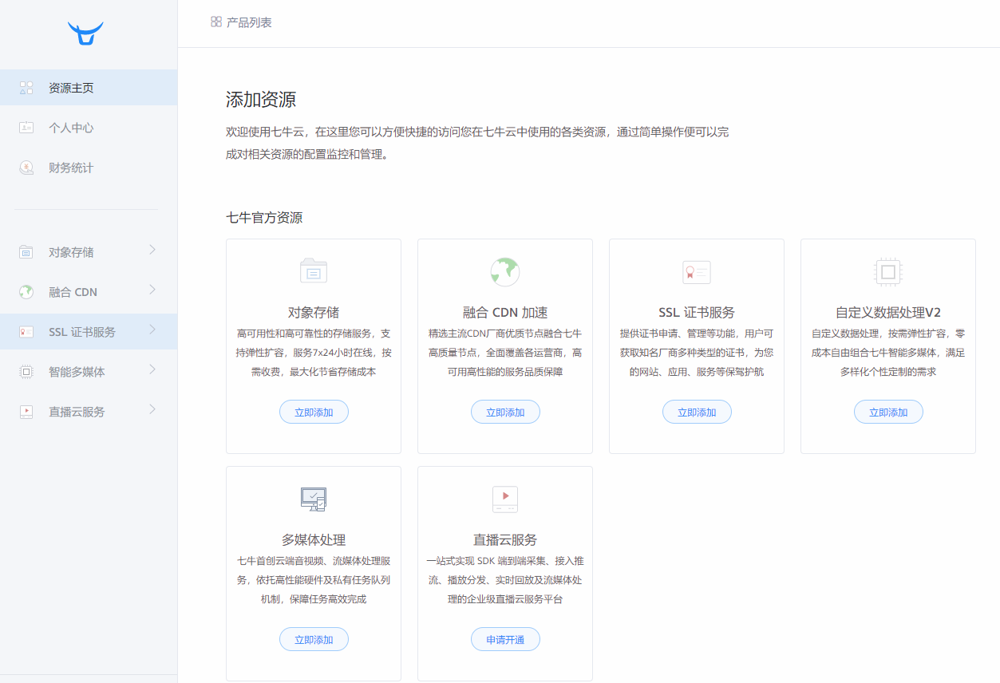
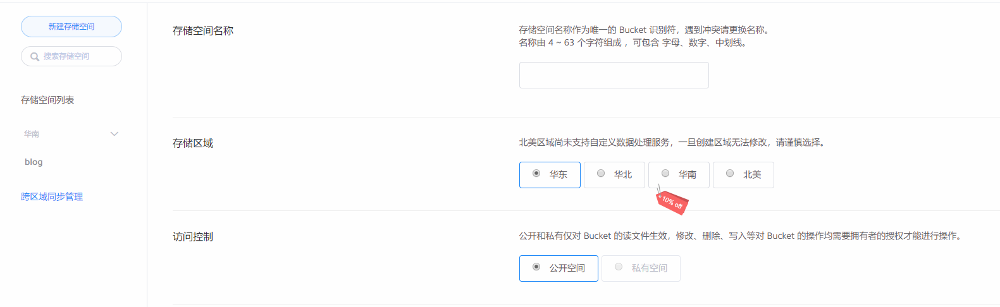
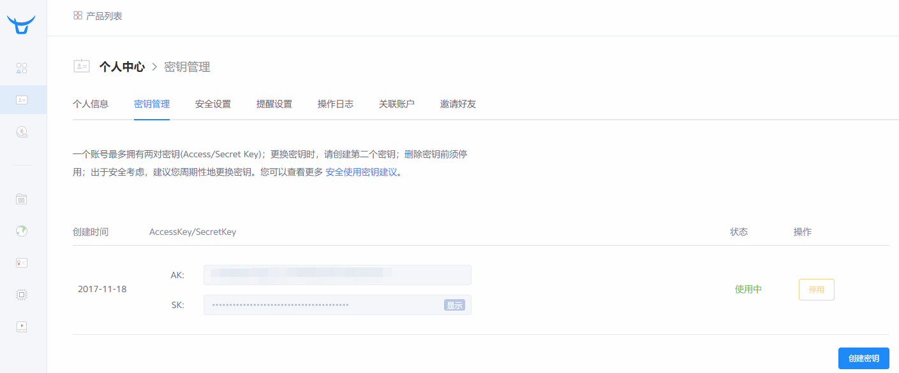
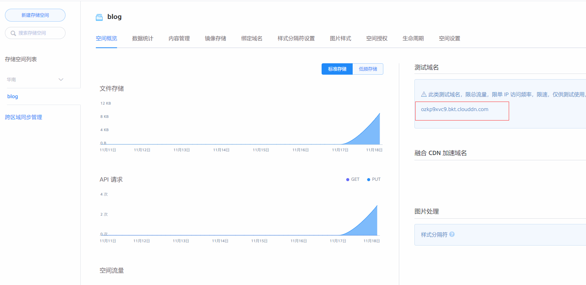
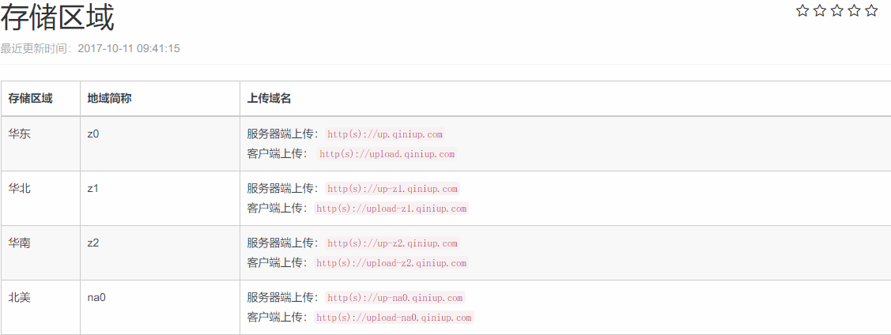

简单来说就是七牛可以用来管理图片,加速访问,标准用户有10G的免费存储空间,超出收费
Github毕竟空间有限,而且国内Github访问慢,所以选用了七牛作为图床
配置
七牛空间设置
首先注册七牛,实名后有10G的免费空间,不实名也能用,有1G的免费空间
注册完之后,到这个界面创建存储空间

填写存储空间信息

- 不同的地区存储空间超出免费范围收费不同,仅此而已,自行抉择
- 存储空间名字随便填,只是方便自己管理
配置qiniu
hexo-qiniu-sync
安装七牛同步插件,避免手动上传图片至云空间
1 | $ npm install hexo-qiniu-sync --save |
配置说明
1 | #七牛云存储设置 |
bucket: 创建存储空间时填写的名字
access_key,secret_key: 与七牛云通讯的密钥,参考access key and secret key

dirPrefix: 存储空间中的虚拟目录,如上面的配置中,可以认为在存储空间中有一个叫做
resources的文件夹urlPrefix: 外链前缀,图片在七牛云上地址前缀

1 | urlPrefix = domain_address + '/' + dirPrefix |
- up_host: 上传服务器路径,参考Qiniu upload host

- local_dir: 本地存放图片的文件夹,如上述配置中为
source\resources
hexo-asset-image
安装
1 | $ npm install hexo-asset-image --save |
hexo-asset-image是什么?
hexo-asset-image用于简化图片引用,需要开启post_asset_folder
执行hexo new [layout] <title>后将在<title>.md同级建立一个<title>目录
图片放在该目录总,markdown中引用方式为,即可引用<title>目录下的demo.png
为什么改?
之所以修改hexo-asset-image是因为hexo-qiniu-sync要求图片引用方式改为如下
1 | {% qnimg imageFile attr1:value1 attr2:value2 'attr3:value31 value32 value3n' [extend:?imageView2/2/w/600 | normal:yes] %} |
而标准的markdown语法为:
1 |  |
改成什么样？
我希望使用标准的markdown语法来写文章,最终html中img的src路径为七牛云中的图片外链
怎么改？
假设,在source\resources\images\下存放一张图片demo.png
按照之前的配置,该图片的外链地址为config.qiniu.urlPrefix/images/demo.png
标准markdown引用该图片的写法为
由于config.qiniu.urlPrefix最后一个字段为resources
因此，可以分割路径,判断路径的第一个字段与config.qiniu.urlPrefix最后一个字段是否相同,进行拼接
修改结果
node_modules\hexo-asset-image\index.js:1
2
3
4
5
6
7
8
9
10
11
12
13
14
15
16
17
18
19
20
21
22
23
24
25
26
27
28
29
30
31
32
33
34
35
36
37
38
39
40
41
42
43
44
45
46
47
48
49
50
51;
var cheerio = require('cheerio');
// http://stackoverflow.com/questions/14480345/how-to-get-the-nth-occurrence-in-a-string
function getPosition(str, m, i) {
return str.split(m, i).join(m).length;
}
hexo.extend.filter.register('after_post_render', function(data)
{
var config = hexo.config;
var link = config.qiniu.urlPrefix; // local actual image folder
var toprocess = ['excerpt', 'more', 'content'];
for(var i = 0; i < toprocess.length; i++)
{
var key = toprocess[i];
var $ = cheerio.load(data[key], {
ignoreWhitespace: false,
xmlMode: false,
lowerCaseTags: false,
decodeEntities: false
});
$('img').each(function()
{
// For windows style path, we replace '\' to '/'.
var src = $(this).attr('src').replace('\\', '/');
// if the regular expression is satisfied, it is actual url instead of local path.
if(!/http[s]*.*|\/\/.*/.test(src))
{
// For "about" page, the first part of "src" can't be removed.
// In addition, to support multi-level local directory.
var linkArray = link.split('/').filter(function(elem){
return elem != '';
});
var srcArray = src.split('/').filter(function(elem){
return elem != '';
});
if(linkArray[linkArray.length - 1] == srcArray[0])
{
srcArray.shift();
src = srcArray.join('/');
$(this).attr('src', link + '/' + src);
}
}
});
data[key] = $.html();
}
});
由于我只是借用了hexo-asset-image的路径拼接,所以不需要开启post-asset-folder
同步图片
- 本地调用命令
server
1 | hexo server |
- 本地调用命令
sync或sync2
1 | hexo sync |
上述四条命令任意一条皆可,更详细的解释参见引用
More Info: